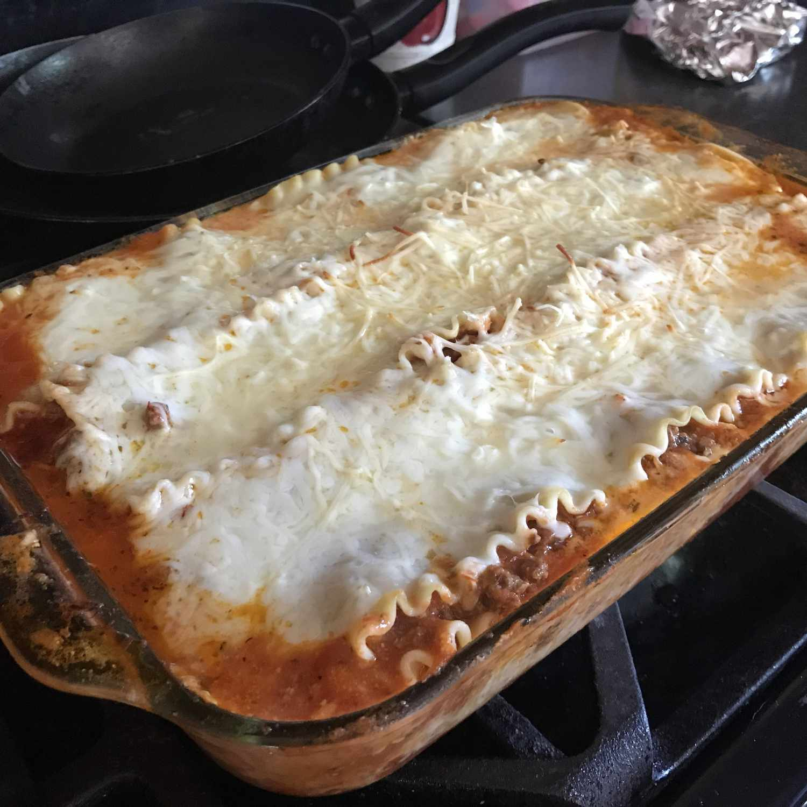

Lasagna

Making perfect homemade lasagna does not have to be tedious. This top-rated easy lasagna recipe comes together quickly with a relatively short ingredient list.
List of Ingredients
- Beef
- Spaghetti Sauce
- Cheeses
- Eggs
- Seasonings
- Lasagna Noodles
- Water
Directions
- Cook and drain the ground beef, then stir in the spaghetti sauce and simmer.
- Combine the cottage cheese, 2 cups of mozzarella, eggs, half of the Parmesan, and seasonings.
- Assemble the lasagna according to the detailed recipe.
- Bake, covered, for 45 minutes.
- Uncover and continue baking for 10 minutes.